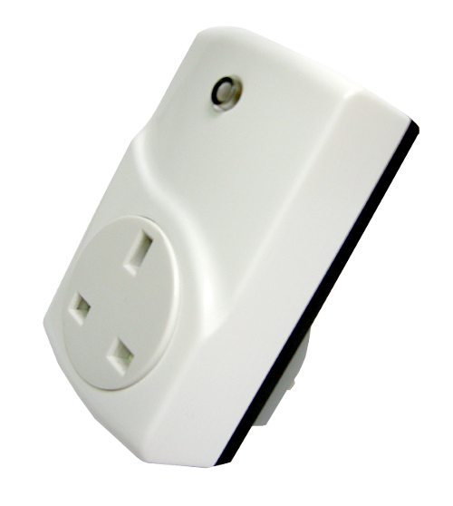
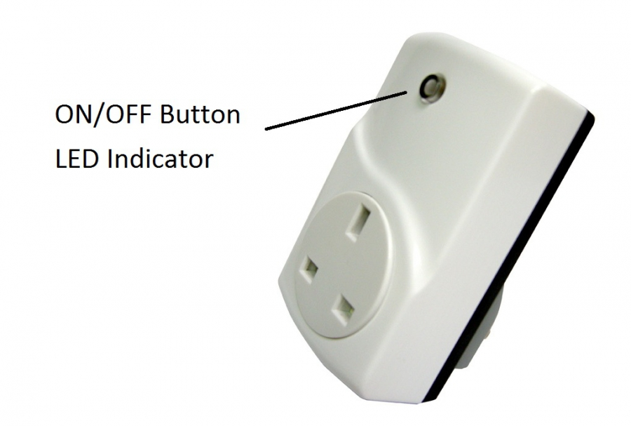

EVR_AN1573
Firmware Version : 1.2 |
 |
Quick StartPlug this module into a wall outlet near the load to be controlled. Plug the load into the module and switch the load to the ON position. To turn ON the module and the load plugged into it, press and release the ON/OFF button of the module. Inclusion and Exclusion are confirmed by a tripple click of the button of the device. Please refer to the chapters below for detailed information about all aspects of the products usage. |
Product description
The Everspring AN1573 is a switch plug that can be placed between a British Standard wall outlet for Plug-Type G and electric devices, plugged in by cord. It can switch all loads up to 3500 W. The device is IP 20 rated and can therefore only be used in dry environments. Switching is controlled wirelessly using Z-Wave or locally applying a button. A red LED indicates the switching status.
Installation Guidelines
The Everspring Switch Plug AN1573 can be plugged into every British wall outlet for Plug-Type G. It is IP20 rated and can therefore only be used in dry environments. Do not locate the Module facing direct sunlight, humid or dusty place. The suitable ambient temperature for the Module is 0°C ~ 40°C.
Behavior within the Z-Wave network
I On factory default the device does not belong to any Z-Wave network. The device needs to join an existing wireless network to communicate with the devices of this network. This process is called Inclusion. Devices can also leave a network. This process is called Exclusion. Both processes are initiated by the primary controller of the Z-Wave network. This controller will be turned into exclusion respective inclusion mode. Please refer to your primary controllers manual on how to turn your controller into inclusion or exclusion mode. Only if the primary controller is in inclusion or exclusion mode, this device can join or leave the network. Leaving the network - i.e. being excluded - sets the device back to factory default.
If the device already belongs to a network, follow the exclusion process before including it in your network. Otherwise inclusion of this device will fail. If the controller being included was a primary controller, it has to be reset first.
Inclusion and Exclusion are confirmed by a tripple click of the button of the device.
Operating the device

The device is able to switch all loads up to 3500 W. Any load above 3500 W is considered as overloading. Switching is controlled wirelessly using Z-Wave or directly over the “ON/OFF” button of the Plugin Switch.
A red LED indicates the switching status.
Technical Data
| Power Supply | 230V ~50-60 Hz |
| Attachable Loads | all loads up to 16 A (3500W) |
| IP Rating | 20 |
| Explorer Frame Support | No |
| SDK | 5.02 pl2 |
| Device Type | Slave |
| Generic Device Class | Binary Switch |
| Specific Device Class | Binary Power Switch |
| Routing | Yes |
| FLiRS | No |
| Firmware Version | 1.2 |